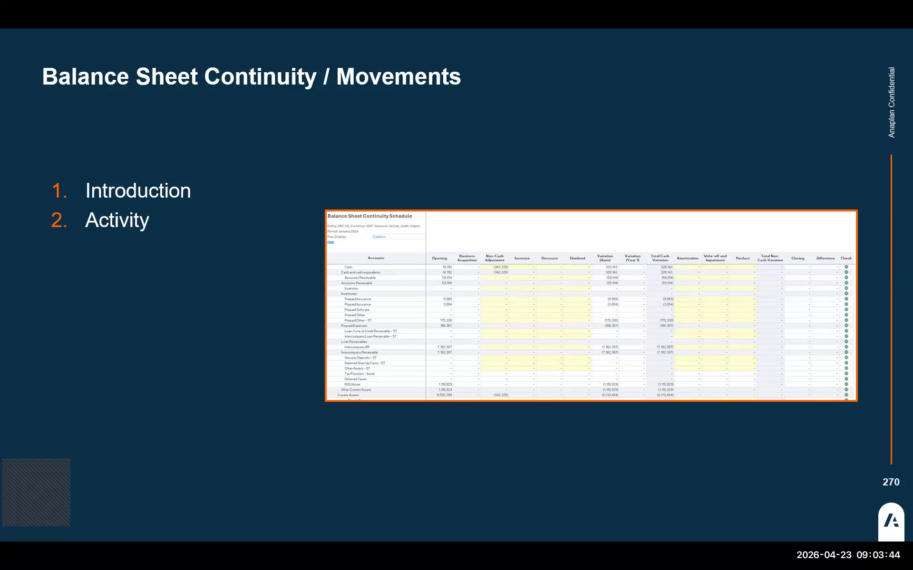
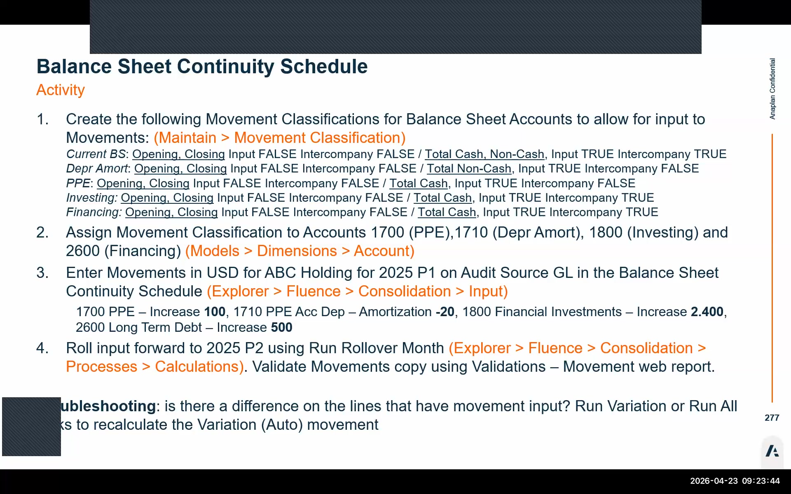

Balance Sheet & Cash Flow
Balance sheet continuity schedules, movement classifications, and cash flow calculation rules
Part 1: Balance Sheet Continuity Schedule
The Balance Sheet Continuity Schedule is an input template that captures movement details on balance sheet accounts — the increases, decreases, acquisitions, and disposals that explain the change from opening to closing balance. This data is the primary input source for the cash flow calculation.
📋 What It Captures
- Detailed movements on balance sheet accounts (e.g., capex additions, disposals, depreciation)
- Values are entered in local currency
- Input amounts are year-to-date
- An audit member must be selected for each entry
⚠️ Key Constraint
- Inputs require the Fluence Excel add-in — yellow editable cells in Excel
- The add-in is not available on Mac; Mac users need a Windows VM
- After cash flow completion, movements can be copied to the next period as part of period initialization
- Running month-end rollover wipes all movement data — only run at start of process
Movement Classifications
Movement classifications are the link between balance sheet accounts and the movement dimension. Each account is assigned exactly one movement classification, which controls which movement dimension members (cash flows, non-cash items, opening, closing) are editable for that account in the continuity schedule.
Create Movement Classifications
Navigate to Maintain → General Setup → Movement Classifications. Create at least three classifications for the workshop model:
- Current BS — for current balance sheet accounts (e.g., receivables, payables)
- GPE — for gross property, plant & equipment (depreciation/amortization treatment)
- Additional as required by chart of accounts
Configure Movement Member Flags
Each classification has true/false flags for each movement dimension member category:
| Flag | Setting | Effect |
|---|---|---|
| Opening | false | Opening balance is not manually editable — calculated from prior period closing |
| Closing | false | Closing balance is not manually editable — calculated from movements |
| Intercompany | false | Intercompany movements not editable via continuity schedule |
| Total Cash | true | Makes child elements of Total Cash editable (not the parent itself) |
| Non-Cash | true | Makes child elements of Non-Cash editable (not the parent itself) |
Assign Classification to Accounts
In the Accounts Dimension, single-click the target account (e.g., account 17117 for PP&E). In the Attributes section, assign the movement classification.
Important: Each account can have only one movement classification. If you need different cash flow treatment for different sub-accounts, create separate classifications and assign them individually.


The Movement Dimension
The movement dimension (sometimes called the "flow dimension" in other consolidation tools) is central to how FCR calculates cash flow. It categorizes every balance sheet movement into a type — total cash, non-cash, opening, closing, intercompany — and the cash flow calculation rules pick up values from specific movement members to populate each cash flow statement line.
When Total Cash = true on a movement classification, the child members under Total Cash become editable — not the Total Cash parent itself (which is a calculated rollup). The same applies to Non-Cash. Opening and closing are always derived by the system: opening is carried forward from the prior period, closing is the sum of opening plus all period movements.
Part 2: Cash Flow Configuration
The Cash Flow statement in FCR is generated through Cash Flow Calculation Rules — a header/detail structure (similar to consolidation rules) that maps GL balance sheet movements to cash flow statement lines.
Cash Flow Account Hierarchy
Cash flow accounts live within the accounts dimension as a distinct hierarchy, separate from the GL accounts. Each cash flow statement line (Operating: Cash from Operations, Investing: Capital Expenditures, etc.) has a corresponding account. The total cash flow parent account must carry the cash flow tag so reports know which accounts to include.
If GL accounts are already loaded in the accounts dimension and you need to add the cash flow account hierarchy, always use Append mode in the import — never Overwrite. Overwriting will erase your existing GL accounts. If cash flow accounts were already loaded as part of a prior activity (e.g., from the Company ABC workbook), skip the import step entirely and go directly to configuring the calculation rules.
Cash Flow Calculation Rule Structure
Navigate to Maintain → Cash Flow Calculation Rules (or the equivalent Configure section). Each rule has:
| Section | Field | Notes |
|---|---|---|
| Header Row | Target cash flow account | The cash flow statement line this rule populates |
| Model type | The consolidation model | |
| Active flag | Must be true for the rule to execute | |
| Detail Rows | Target movement | Which movement dimension member receives the cash flow value |
| Target audit | Audit member for the cash flow posting | |
| Operator (+/–) | Whether to add or subtract this source's contribution | |
| Source GL accounts | The balance sheet accounts whose movements feed this cash flow line | |
| Source movement | Critical: the movement dimension member to read from the source account (e.g., Total Cash, Total Non-Cash) |
To determine whether a cash flow rule should add (+) or subtract (–), think in balance sheet debit/credit terms: if an asset decreases (e.g., receivables paid down), cash comes in → positive operator. If an expense increases, cash goes out → negative operator. Use the balance sheet movement direction to determine the cash flow sign — not accounting debit/credit logic.
The data is physically duplicated onto the cash flow accounts. You can still drill from a cash flow account back to the detailed GL account and audit member for traceability.
Cash Flow Process Steps
Confirm Copy Opening Has Been Run
Opening balances must be in the system before the cash flow calculation runs. Verify Copy Opening completed successfully for the current period.
Configure Cash Flow Calculation Rules
For each cash flow statement row (e.g., Profit Before Tax, Depreciation & Amortization, Changes in Working Capital, Capex), create a header record and detail records referencing the appropriate source GL accounts and movement members.
Run the Cash Flow Calculation
Execute the cash flow calculation process from the Processes menu. This populates the cash flow account hierarchy with values derived from the GL balance sheet movements.
View the Cash Flow Statement
Navigate to the reporting module and open the Cash Flow Statement report. Verify each section shows the expected values. For debugging, drill from a cash flow line back to the source GL account and movement member.
Cash Flow Adjustment Form
For fine-tuning the cash flow without impacting balance sheet accounts, FCR provides a Cash Flow Adjustment Form. This is an Excel-based input form requiring the Fluence Excel add-in. It allows manual adjustments to specific cash flow lines — for example, reclassifying a payment to a different cash flow category — without creating journal entries that would affect the trial balance.
The Fluence Excel add-in is required for both the Balance Sheet Continuity Schedule and the Cash Flow Adjustment Form. The add-in is not available for Mac. Mac users must use a Windows VM to access these input forms. There are currently no known plans to add Mac support. Post-workshop, participants have approximately 5 weeks of tenant access to complete these activities on a PC.